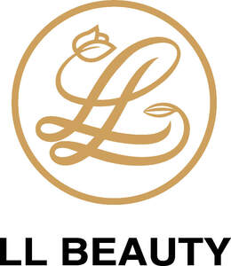

Trade Mark Journal No.2025/032 8 August 2025
UK00004222564 21 June 2025 (3,44)

- Class 3
- Beauty care cosmetics; Beauty care preparations; Body care cosmetics; Skin care cosmetics; Cosmetic nail care preparations; Beauty masks; Masks (Beauty -); Nail polish; Nail varnish; Varnish (Nail -); Nail glitter; Nail gel; Nail varnishes; Nail enamel; Nail strengtheners; Nail hardeners; Nail makeup; Nail enamels; Nail polish removers; Nail cosmetics; Nail polish remover; Nail tips; Nail polish pens; Nail whiteners; Nail cream; Nail enamel remover; Nail varnish removers; Nail enamel removers; Gel nail removers; Nail polish remover pens; Nail conditioners; Nail paint [cosmetics]; Nail polish removers [cosmetics]; Nail polish top coat; Nail hardeners [cosmetics]; Nail polish base coat; Nail primer [cosmetics]; Nail varnish remover [cosmetics]; Nail tips [cosmetics]; Nail art stickers; Nail decolorants; Nail polishing powder; Nail base coat [cosmetics]; Nail buffing preparations; Nail varnish removing preparations; Nail varnish for cosmetic purposes; Nail care preparations; Cosmetic nail preparations; Nail repair preparations; Polish; Lotions for strengthening the nails; Adhesives for false eyelashes, hair and nails; Adhesives for fixing false nails; Adhesives for artificial nails; Preparations for removing gel nails; Fingernail tips; Nail-polish removers; Cosmetic preparations for nail drying; Powder for forming sculpted finger nail tips.
- Class 44
- Beauty care; Beauty care services; Hygienic and beauty care; Hygienic and beauty care services; Beauty care of feet; Human hygiene and beauty care; Hygienic and beauty care for humans; Provision of hygienic and beauty care services; Beauty treatment; Health care; Beauty care for human beings; Consultancy in the field of body and beauty care; Hygienic and beauty care for human beings; Information relating to beauty care; Consultation services relating to beauty care; Beauty treatment services; Skin care salons; Skin care salon services; Services for the care of the skin; Cosmetic body care services; Salon services (Beauty -); Beauty salon services; Facial beauty treatment services; Beauty therapy services; Beauty treatment services especially for eyelashes; Nail care services; Medical care; Salons (Beauty -); Beauty salons; Services for the care of the face; Services of a hair and beauty salon; Beauty consultation; Beauty counselling; Beauty consultation services; Beauty information services; Beauty therapy treatments; Nail salon services; Injectable filler treatments for cosmetic purposes; Cosmetic treatment; Surgery (Cosmetic -); Cosmetic and plastic surgery; Cosmetic treatment for the body; Cosmetic laser treatment of skin; Cosmetic electrolysis; Cosmetic laser treatment of tattoos; Cosmetic treatment for the face; Cosmetic surgery services; Cosmetic and plastic surgery clinic services; Cosmetic laser treatment of varicose veins; Cosmetic facial and body treatment services; Electrolysis for cosmetic purposes; Cosmetic laser treatment of unwanted hair; Cosmetic analysis; Cosmetic make-up services; Application of cosmetic products to the body.
LL Beauty Limited